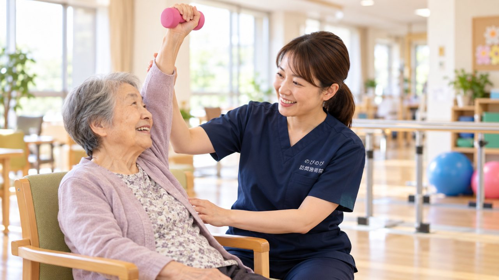

退院の日、ほっとしたのもつかの間、「また入院になったらどうしよう」という不安が頭をよぎる。ご家族からよく聞くお気持ちです。入院で体力や関節が落ちたところへ、家でも動く機会が減ると、その落ち込みがなかなか戻らず、体調のくずれや再入院につながることがあります。退院後の数週間をどう過ごすかで、その後の暮らしはずいぶん変わります。誤嚥や肺炎、転倒といった具体的な場面をふまえて、家で体を落とさないためにできることを、訪問の現場からお話しします。
この記事のポイント
退院後は動く機会が減り、体力や関節が落ちやすく、それが体調のくずれや再入院につながることもあります。訪問鍼灸マッサージは、痛みやこわばりをやわらげ、動く力を保つお手伝いをします。医師の同意による医療保険で、介護保険の限度額とは別枠。退院直後からでも始められ、1回3,950円、1割負担なら約395円が目安です。
退院して家に戻った、その日からの数週間
入院中はどうしても横になっている時間が長くなります。治療のためとはいえ、検査や点滴でベッドの上にいる日が続けば、退院する頃には入院前より体力が落ちていることがたびたびあります。本人は前と同じつもりで動こうとするのに、足腰がついてこない。この時期は、そういうずれが起きやすいものです。
家に帰ってからも、痛みや息切れ、転ぶかもしれないという不安から、動くのを控える日が続くことがあります。使わない時間が増えると関節は固くなり、力も戻りにくくなっていきます。こうして少しずつ機能が下がっていく状態を廃用と呼びます。廃用そのものは病気ではありませんが、放っておくと在宅の暮らしを立て直す妨げになりがちです。
退院はゴールではなく、家での生活を組み直していく出発点です。数日から数週間、動きが減っただけでも、体は思ったより変わります。そのため、この数週間の過ごし方に少し目を向けておきたいのです。
動かない時間が、思わぬところに響く
関節が固まり、立ち座りや歩く力が落ちてくると、わずかな段差でつまずきやすくなります。高齢の方の転倒は骨折につながることがあり、それがそのまま次の入院のきっかけになる場合もあります。退院後に特に用心したい場面のひとつです。
見落とされやすいのが、呼吸や飲み込みに関わる部分です。ベッドで過ごす時間が長いと、肩や胸のまわりが固まって、深く息を吸いにくくなることがあります。息が浅くなれば痰も出しにくい。飲み込む力が落ちてくると、食べ物や唾液が気管に入りやすくなり、それが肺炎の背景になることもあります。
ただ、これらは動きが減ると起こりやすくなるという傾向の話であって、体を動かしていれば必ず避けられるというものではありません。再入院をこちらで防げると約束することはできません。それでも、こわばりをためこまず、動く機会を保っておくことには、備えとしての意味があると考えています。
この変化は、施術より先に主治医へ
退院後は、施術を受けること以上に優先すべき場面があります。急に熱が出た。痛みが前より強く増している。息苦しさがある。傷口の様子がいつもと違う。こうしたサインが出たときは、まず主治医に診てもらうのが先です。私たちが体をゆるめる出番ではありません。
訪問の場でこうした変化に気づいたら、施術を続けるより、早めに主治医やケアマネジャー、訪問看護へおつなぎする役割を優先します。定期的に家に入る目があることで、悪化のサインに早く気づき、医療につなぐまでの時間を縮められる。そこがこの仕事の大事な部分だと思っています。
訪問鍼灸マッサージができること、できないこと
のびのび訪問施術院では、はりときゅう、こわばりをゆるめる手技、そして関節の動く範囲を保つ機能訓練を、その日の体調に合わせて組み合わせます。身体を動かす運動は鍼灸に加えて行うもので、追加の料金はいただきません。1回およそ20分から30分。通院せずご自宅で受けられるので、体調に波のある退院直後でも、布団やベッドの上のまま続けやすいのが利点です。
たとえば点滴やベッド生活で固まりやすい肩や胸、背中をていねいにほぐしていきます。胸が動きやすくなれば、息を深く吸いやすくなることが期待できます。足腰では、股関節やひざ、足首の動きを保って、立ち上がりやトイレまで歩く力を落とさないよう手伝います。むくんだ足を温めたり、痛みをやわらげて夜の眠りを助けたり。内容はその日ごとに選びます。
ただ、これは病気を治すものではありません。あくまで在宅の暮らしを支える補助的な役割です。医療とリハビリが中心にあって、その周りで動きやすさを保つお手伝いをする、という位置づけになります。効果の感じ方には個人差があり、同じことをしても人によって受け取り方は変わります。脳梗塞や脳出血のあとの後遺症へのケアについては、「脳梗塞・脳出血の後遺症のケア」でもう少し詳しくお伝えしています。
医療やリハビリと、役割を分けて
点滴や創部の管理、服薬の調整といった医療的な処置は、訪問看護や訪問診療の役割です。歩く練習や日常動作の再獲得を目標にしたリハビリは、訪問リハビリが担います。私たちが受け持つのは、体をこわばらせず動きやすさを保つという部分。どれかを選ぶのではなく、それぞれの得意なところで支え合う形が、退院後の体には向いています。
ひとつ整理しておきたいのが、保険の使い方です。医療保険のリハビリと鍼灸を、同じ部位・同じ時期に同時に算定することはできません。訪問リハビリと重なりそうなときは、どの部位を、どの時期に受け持つかを主治医やケアマネジャーと相談しながら整理していきます。ここを最初に決めておくと、あとで混乱せずにすみます。
施術で気づいた体の変化は、必要に応じてケアに関わる方々と共有します。離れて暮らすご家族にも、その日の様子が伝わるようにしています。頻繁に帰省できない立場からすると、家に入る専門家の目があること自体が、ひとつの安心材料になるようです。
保険と費用の仕組み
訪問鍼灸マッサージを医療保険（療養費）で受けるには、医師の同意書が必要です。要介護認定は要りません。保険の対象になるのは、神経痛、リウマチ、頸肩腕症候群、五十肩、腰痛症、頸椎捻挫後遺症といった症状です。介護保険とは制度が別なので、区分支給限度基準額とは別に組み合わせられます。
費用は1回あたり総額3,950円です。自己負担1割の方でおよそ395円が目安になります。訪問にかかる費用はこの料金に含まれていて、別立ての出張費はいただきません。週2回のペースなら、1割負担で月におよそ3,160円。ご高齢の方は1割か2割の方が多く、実際の負担は数百円台に収まることがほとんどです。明細は月ごとにお渡しします。
始めどきは、退院が決まったとき
いちばん伝えたいのは、退院してから探し始めると空白ができやすい、ということです。体が落ちやすいのはまさにその空白の時期。退院が決まった段階で段取りを進めておけば、家に戻ったその日から間を置かずにケアへ移れます。同意書の準備に少し時間がかかることもあるので、入院中のうちにご相談いただいてかまいません。退院支援室の相談員やケアマネジャーを通してのお問い合わせも歓迎しています。
退院直後のご家族は、また熱が出たら、また入院になったらと気を張って過ごしがちです。ずっと目を離せないという緊張は、想像以上に消耗します。定期的に専門家が家に入り、体の様子を見て記録しておくことが、その張りつめた気持ちを少しゆるめる助けになればと思っています。まだ体力に余裕があるうちから備えておくという考え方については、「「まだ大丈夫」のうちに始める在宅ケア」もあわせてご覧ください。
よくある質問
退院直後からでも受けられますか？
はい。体調に配慮しながら、お布団やベッドの上でも受けていただけます。医師の同意書があれば、退院直後からでも医療保険で始められます。まだ入院中の段階でご相談いただいても大丈夫です。
訪問看護や訪問リハビリと併用できますか？
できます。訪問鍼灸マッサージは医療保険、訪問看護などは制度が別なので、役割を分けて併用できます。医療的な管理が必要な場合は、訪問看護・訪問診療と組み合わせると安心です。
誤嚥性肺炎や再入院を防げますか？
「必ず防げる」とは言えません。リスクをゼロにするものでもありません。ただ、胸まわりや首のこわばりをやわらげ、動く機会を保つことは、間接的な備えの助けになります。経過には個人差があります。
退院前に相談してもいいですか？
ぜひ。退院が決まった段階からのご相談が理想です。同意書の準備に時間がかかることもあるため、早めだと空白をつくらずにすみます。退院支援室やケアマネジャー経由でも承ります。
費用はいくらかかりますか？
総額3,950円、1割負担なら1回およそ395円が目安です。訪問の費用は料金に含まれ、別立ての出張費はいただきません。明細は月ごとにお渡しします。介護保険の限度額とは別枠です。
入院を何度も繰り返している家族にも向いていますか？
体を動かす機会を保ち、こわばりや筋力の低下をためこまない助けになります。ただし医療的な管理が必要な場合は、訪問看護・訪問診療と役割を分けて併用するのが安心です。まずは今の状態をお聞かせください。
脳梗塞・脳出血の後遺症のケアについては、脳梗塞・脳出血の後遺症と訪問鍼灸マッサージで詳しくお伝えしています。